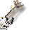
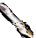
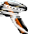
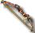
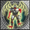
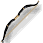
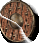
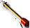

Ошибки оригинальной игры, которые исправляет мод: как было и как стало. Всего — 140.
Bugs of the original game that the mod fixes: how it was and how it is now. 140 in all.
Город с лишними жилищами.
БылоЕсли скрипт карты строил в городе оба жилища одного уровня, то при шести жилищах вылетало окно найма в форте, цитадели или замке («Купить всех»), а при семи и больше — сам экран города.
СталоГород и окно найма открываются, покупка работает.
Случайный артефакт-лук.
БылоЕсли на карте разрешены «

Рогатый лук» или «Чёрный лук», случайный артефакт мог стать одним из них, и карта не открывалась с сообщением, что файл испорчен.СталоКарта открывается, лук лежит на месте случайного артефакта.
Ворота-квест взрывают сами себя.
БылоЕсли скрипт награды ворот-квеста взрывал их же клетку, игра вылетала сразу после выполнения задания.
СталоВорота исчезают, игра идёт дальше.
Проверка «герой мёртв» после увольнения.
БылоЕсли героя с заданным в редакторе именем увольняли или он сбегал из боя, а скрипт карты проверял, мёртв ли он, игра вылетала или ход не передавался.
СталоТакой герой считается отсутствующим, проверка просто не срабатывает, и ход передаётся.
Вход в город, шахту или гарнизон.
БылоЕсли скрипт, срабатывающий при входе в город, шахту или гарнизон, уничтожал вошедшую армию или она проигрывала в нём бой, игра могла вылететь, а гарнизон доставался могиле погибшего героя.
СталоПосещение просто заканчивается — без окна и без захвата.
Пролог кампании без текста.
БылоЕсли у пролога карты кампании была картинка, но не было текста, кнопки повтора и паузы текста роняли игру.
СталоЭти кнопки управляют озвучкой, как и положено.
Существо с множеством способностей.
БылоЕсли у существа больше четырёх способностей (так бывает в переделанных данных игры), вылетали окно найма, окно армии, боковая панель и окно существа в бою.
СталоОкна открываются и показывают столько способностей, сколько в них помещается.
Армия, ставшая нейтральной по скрипту.
БылоЕсли скрипт в начале дня отдавал выбранную армию нейтралам или другому игроку, игрок продолжал ею управлять, и игра вылетала у сундуков, таверн, кузниц, порталов и многих других объектов.
СталоС такой армии снимается выбор, управлять ею больше нельзя.
Вылет в бою из-за звука.
БылоИгра иногда закрывалась посреди боя, особенно сетевого, из-за ошибки при проигрывании звуков.
СталоИгра больше не вылетает.
Вылет в бою при подгрузке анимаций.
БылоБой иногда вылетал, пока игра подгружала анимации существ, чаще всего когда на поле появлялись новые отряды — призванные или иллюзии.
СталоИгра больше не вылетает.
Вылеты в ходу компьютера.
БылоИгра иногда закрывалась во время хода компьютерного игрока.
СталоИгра больше не вылетает.
Бой со своей же армией.
БылоЕсли скрипт встречи отдавал атакованную армию нападающему, начинался бой между двумя армиями одного игрока, и он мог намертво зависнуть.
СталоТакие армии встречаются как свои — обмениваются отрядами вместо боя.
«Мученик» по кругу.
БылоУкраденный «Похищением чар» «Мученик» мог замкнуть защиту отряда на самого себя: урон ходил по кругу, и бой зависал так, что помогало только закрыть игру.
Стало«Мученика» больше нельзя похитить.
Кузница на карте.
БылоНа карте с кузницей и почти всеми запрещёнными артефактами игра могла зависнуть при запуске, а большой предмет кузницы проверялся по чужому запрету.
СталоКарта запускается, кузница не продаёт запрещённых предметов.
Загрузка из боя.
БылоИгра могла намертво зависнуть, если загрузить сохранение посреди боя.
СталоСохранение загружается.
Карта приключений не тормозит.
БылоКарта приключений сильно нагружала процессор и тормозила, когда была открыта вся карта, а ход компьютера затягивался.
СталоКарта нагружает процессор меньше и не тормозит, ход компьютера не затягивается.
Плавная ходьба с сеткой боя.
БылоС включённой сеткой отряды ходили рывками, а путь под курсором притормаживал игру — тени перерисовывались почти на всё поле.
СталоПерерисовывается только участок под тенью, отряды ходят плавно.
Бой без подёргиваний под музыку.
БылоКаждые четверть секунды игра на мгновение замирала, пока подгружала следующий кусок музыки.
СталоМузыка подгружается отдельно и бой не прерывает.
Анимации загружаются заранее.
БылоУдар, вздрагивание или смерть существа впервые подгружались прямо посреди движения, и бой на мгновение замирал.
СталоВсе анимации существ на поле понемногу загружаются в первые секунды боя, без паузы при его открытии.
Плавная ходьба в бою.
БылоСущества двигались по полю боя рывками, примерно 15 раз в секунду.
СталоОни идут и летят плавно, с той же скоростью и теми же анимациями.
Меньше записи на диск.
БылоВ каждом бою на диск писался подробный журнал действий компьютера, и файл рос с каждым боем.
СталоЭтот журнал больше не ведётся.
Автосохранение без папки сохранений.
БылоЕсли в папке игры не было папки для сохранений (так бывает при запуске на Linux), автосохранение и сохранение игры заканчивались ошибкой.
СталоПапка для сохранений создаётся при запуске игры.
Обереги и бонусы местности после загрузки боя.
БылоПосле загрузки игры, сохранённой посреди боя, до первого хода отряда пропадали обереги, бонус кустов и штраф зыбучих песков.
СталоВсё действует сразу после загрузки.
Связывание богомолами после загрузки боя.
БылоПосле загрузки боя отряд, связанный богомолами, оставался связанным, даже когда богомолы улетали к другой цели.
СталоОтряд остаётся связанным и освобождается, когда богомолы улетают.
Загрузка боя прямо из боя.
БылоИгра вылетала, если загрузить сохранённый бой, не выходя из текущего.
СталоИгра больше не вылетает.
Армагеддон тратит ману.
БылоАрмагеддон колдовался бесплатно — мана героя не уменьшалась, а способности существ, которые наказывают вражеского колдуна, не срабатывали.
СталоАрмагеддон стоит маны, как любое другое заклинание.
Армагеддон — огненное заклинание.
БылоСопротивление огню, Щит из чешуи дракона и огнеупорные существа (огненные элементали, ифриты, фениксы) не спасали от Армагеддона — урон шёл полный.
СталоТакие существа и армия героя со Щитом из чешуи дракона урона от Армагеддона не получают, у обеих сторон.
Призванных нельзя снять.
Было« Снятие чар» и «
Снятие чар» и « Отмена чар» уничтожали поднятых мертвецов, вампиров, существ Зова смерти и бесов.
Отмена чар» уничтожали поднятых мертвецов, вампиров, существ Зова смерти и бесов.
СталоЭти существа остаются в бою, снять их чарами нельзя.
Заклинание на существо, у которого эта способность уже есть.
Было« Первый удар», Сопротивление огню, Магическое зеркало и подобные можно было наложить на существо с той же врождённой способностью — мана тратилась впустую.
Первый удар», Сопротивление огню, Магическое зеркало и подобные можно было наложить на существо с той же врождённой способностью — мана тратилась впустую.
СталоИгра пишет, что существо невосприимчиво, и мана не тратится.
«Длань богов» только в бою.
БылоЗаклинание можно было применить на карте приключений — мана тратилась, но погибший герой не воскресал.
СталоНа карте его в книге нет, в бою оно работает как прежде.
Магическое зеркало.
БылоЕсли заклинание убивало отряд с зеркалом целиком, анимация отражения проигрывалась, но само заклинание не возвращалось.
СталоЗеркало отражает заклинание и тогда, когда оно убило отряд.
Антимагия и Небесный щит.
БылоАнтимагия снимала с армии Небесный щит от Плаща из ангельских перьев, и мораль героя падала, будто армия понесла потери.
СталоЩит, как и Полёт от плаща, не снимается, а мораль в бою падает только от погибших и раненых.
Возмездие у компьютера.
БылоКомпьютер считал Возмездие выгодным и на чужом отряде и колдовал его на отряды игрока.
СталоКомпьютер колдует Возмездие только на свои отряды.
Яд, Чума и Регенерация кончаются.
БылоВ описании «15 раундов», а действовали весь бой; на герое с полным сопротивлением магии Яд и Чума висели, отнимая по 0 здоровья каждый ход.
СталоОни кончаются через 15 раундов, а Яд и Чума, которые не наносят урона, не накладываются вовсе.
Городские врата не колдуются в бою.
БылоГородские врата можно было применить посреди боя и унести армию в город.
СталоВ бою игра отказывает, как и с другими заклинаниями для карты.
«Кража магии» только на колдующих.
БылоЗаклинание накладывалось на любое существо, даже на големов, у которых маны нет.
СталоНа существо без маны «Кража магии» не накладывается.
 Ослепление и удар единорога.
Ослепление и удар единорога.
БылоЗаклинание Ослепление действовало на механизмы и элементалей, а ослепляющий удар единорога слепил кого угодно, даже нежить и существ с иммунитетом к магии.
СталоНи заклинание, ни удар единорога не действуют на механизмы, элементалей, нежить и тех, кто защищён от Ослепления.

БылоОбещанные +50% урона по существам Смерти не получал никто — ни герой, ни армия.
СталоГерой и его армия бьют существ Смерти на 50% сильнее.
Обереги щитов и Символ неудачи.
БылоОберег от щита героя (Щит из чешуи дракона, щиты защиты от школ) и неудача от Символа неудачи пропадали у существа после его хода и возвращались ходом носителя; поднятые и призванные в бою оберега не получали.
СталоОбереги и неудача от Символа держатся весь бой, в том числе на существах, появившихся в бою.
Щит из чешуи дракона.
БылоДавал +25% к защите вместо обещанных +30% и попадался как случайный малый артефакт, хотя в редакторе он большой.
Стало+30% к защите, и как случайный артефакт он большой.
Цепь друида.
БылоЦепь повышала уровень Призывания, но существа призывались прежние — ниже уровня, который она обещает.
СталоС цепью герой призывает существ того уровня навыка, который даёт цепь.
Чёрный лук на случайных картах.
БылоКарта, где Чёрный лук разрешён как случайный артефакт, не открывалась — игра называла файл испорченным.
СталоТакая карта открывается, и лук на ней лежит.
Кольцо отрицания и мораль нежити.
БылоС Кольцом отрицания Печаль и Рвение действовали на нежить и механизмы, и скелеты под Печалью каждый ход теряли ходы.
СталоУ нежити и механизмов морали нет, и эти заклинания на них не действуют даже с кольцом.
Артефакты героя в кампании.
БылоГерою, перешедшему на следующую карту кампании, приходилось снимать и снова надевать артефакты, иначе их заклинания не колдовались.
СталоЗаклинания артефактов работают сразу.
Источник скорости.
БылоОкно обещало +2 к скорости, а давало +3, и вместе с Зельем скорости одно из них ничего не прибавляло.
СталоИсточник даёт +2 и складывается с Зельем скорости — вместе +5, на карте и в бою.
Жезлы заряжены в начале боя.
БылоЕсли прошлый бой оборвался, герой ушёл порталом или лечил жезлом на карте, Жезл иллюзий и другие жезлы начинали следующий бой пустыми.
СталоЖезлы начинают каждый бой заряженными, как сказано в описании.
Зелье маны — только до максимума.
БылоЗелье поднимало ману выше максимума героя, на карте и в бою.
СталоЗелье доливает ману только до максимума, а герою с полной маной не применяется и остаётся в рюкзаке.
Арбалет снайпера.
Было

Арбалет снимал с армии только штраф за расстояние, штраф за препятствия оставался.СталоСтрелки с арбалетом стреляют без штрафа и за расстояние, и за препятствия.

БылоЛишний выстрел от лука не складывался с собственным двойным выстрелом (эльфы стреляли 2 раза, а не 3) и не доставался герою, который носит лук.
СталоЭльфы с луком стреляют 3 раза, и сам герой с луком получает лишний выстрел.
Призывы с новым балансом существ.
БылоПосле изменения существ в моде заклинания призыва давали не столько существ, сколько в оригинале.
СталоПризыв даёт столько же существ, сколько в оригинале: шесть дьяволов снова призывают шесть ледяных демонов.
Два удара по замороженной цели.
БылоСущество или герой с двумя ударами бил замороженную, оглушённую или ослеплённую цель только один раз — второй удар терялся.
СталоТакая цель получает оба удара.
Огромные отряды.
БылоВ отрядах из сотен тысяч существ числа переполнялись: заклинания переставали наносить урон, фениксы возрождались в количестве 0, отряды не получали урона и были «живы, но мертвы».
СталоОгромные отряды воюют правильно — заклинания и удары наносят урон, фениксы возрождаются.
Значок защиты класса.
БылоУ Огнестража, Монаха и Паладина в бою не было значка защиты, которую даёт их класс, хотя она работала.
СталоЗначок виден в окне существа и на панели боя.
Выстрел по площади.
БылоЦиклопы, гаргантюа, катапульты и Пылающая стрела били отряды за спинами других без штрафа за дальность — в полную силу.
СталоВсе задетые отряды получают урон с тем штрафом за дальность, что обещает подсказка.
65 000 стрел после загрузки боя.
БылоЕсли эльфы с одной стрелой стреляли дважды, стрел становилось «минус одна»; после сохранения и загрузки боя у отряда оказывалось 65 535 стрел.
СталоСтрелы не уходят ниже нуля.
Похищение чар крадёт только чары.
БылоЗаклинание забирало у вражеских героев и эффекты выпитых зелий, и постоянные бонусы их артефактов (враг при этом их не терял), а заодно и «Мученика».
СталоКрадутся только полезные заклинания, наложенные на отряд.
Песнь мира не останавливает компьютер.
БылоПод несколькими Песнями мира подряд компьютер не нажимал «Защиту» и «Ожидание» и просто стоял, пока его били.
СталоПод Песнью мира отряд компьютера встаёт в защиту, если до него могут добраться сильные бойцы.
Мёртвый герой не учится.
БылоГероя, погибшего в бою, армия могла водить по учебным зданиям: Университет магии и подобные продавали навыки мёртвому, свитки и скрипты учили его заклинаниям, а компьютер платил за такие уроки золотом.
СталоМёртвый герой не получает ни навыков, ни заклинаний, в окне Университета он показан как «нет героев», и компьютер за него не платит.
Мёртвый герой не прибавляет армии параметров.
БылоОкно армии показывало существам атаку, защиту, удачу, мораль и скорость с бонусами от навыков и артефактов погибшего героя, хотя в бою этих бонусов не было.
СталоМёртвый герой ничего не даёт армии, и окно армии, подсказки и оценка силы у компьютера совпадают с боем.
Мёртвый герой не берёт бонус хода.
БылоОазис, Водопой, Флаг сбора и Конюшни давали бонус хода и погибшему герою, которого армия несла с собой.
СталоБонус получают только живые, а воскрешённый герой может зайти за ним сам.
Здоровье после снятия кольца.
БылоЕсли снять с героя  Кольцо здоровья или другой артефакт на здоровье, здоровье могло стать отрицательным: герой не выходил в бой, но получал опыт, а оставшись без армии, погибал.
Кольцо здоровья или другой артефакт на здоровье, здоровье могло стать отрицательным: герой не выходил в бой, но получал опыт, а оставшись без армии, погибал.
СталоУ живого героя после потери здоровья от артефактов всегда остаётся хотя бы 1 единица здоровья.
Боевой маг сразу знает « Волшебный кулак».
Волшебный кулак».
БылоГерой, ставший Боевым магом, не получал «Волшебный кулак», обещанный описанием класса, пока не наденет или не снимет какой-нибудь артефакт.
СталоЗаклинание появляется в книге сразу при смене класса и у нового героя.
Навыки при повышении уровня не меняются от перезагрузки.
БылоВыбор навыков при повышении уровня выпадал заново каждый раз, и, загружая сохранение перед боем, можно было перебирать варианты, пока не выпадет нужный.
СталоПосле загрузки выпадают те же навыки, но в каждой новой партии прокачка героев своя.
Опыт героя 70-го уровня.
БылоГерой 70-го, последнего уровня продолжал забирать свою долю опыта за бой, и она пропадала впустую.
СталоЕго доля достаётся остальным героям армии; так же работает и потолок уровня на картах кампании.
Учёные не учат запрещённым навыкам.
БылоУчёный на карте (тренер боя, тактик, разведчик, жрец и другие) учил навыку своей ветки, даже если этот навык запрещён на карте.
СталоУчёный предлагает только навыки, разрешённые картой.
Отделённый отряд.
БылоОтряд, отделённый в окне армии, или вся армия после смены рядов пробелом могли встать за непроходимую клетку: по диагонали между препятствиями, мимо стражи или ворот, через реку, из лодки на берег.
СталоОтряд встаёт только туда, куда можно шагнуть, армия в лодке не делится, клетку можно выбрать на компасе (кнопка в окне армии или Tab), а кнопка не пропадает под мышью и не рисуется поверх окон игры.
Монстр возвращается на свой пост.
БылоМонстр, напавший на армию, после боя оставался там, где напал, и мог освободить проход, а после загрузки сохранения из боя возвращался назад — положением монстров можно было управлять сохранениями.
СталоМонстр после боя всегда возвращается туда, откуда напал.
Нейтралы присоединяются один раз.
БылоНейтралов, перешедших к герою благодаря Дипломатии или Обаянию, можно было не взять, распустить своих и снова встретить тех же нейтралов, сохранением и загрузкой — тоже.
СталоПовторно уговорить ту же армию нельзя: при следующей встрече она сразу вступает в бой.
Полная армия предупреждает о потерях.
БылоЕсли к полной армии присоединялись существа (задание, Обаяние, Дипломатия), а рядом негде поставить новую армию, оставшиеся в верхнем ряду окна отряды молча пропадали при закрытии.
СталоОкно перечисляет, что пропадёт, и спрашивает; «Нет» оставляет окно открытым.
Внешняя таверна — один герой в неделю.
БылоЕсли в таверне долго никого не нанимали, после первого найма с 8-го дня она продавала второго героя уже на следующий день.
СталоНеделя считается от первого найма, таверна продаёт одного героя в неделю, и в старых сохранениях тоже.
Событие под армией не повторяется.
БылоПосле загрузки сохранения событие на клетке, где стоит армия, срабатывало снова от любого действия, например открытия окна армии, и так сколько угодно раз.
СталоПосле загрузки армия помнит, что событие на её клетке уже было.
Копать из лодки нельзя.
БылоКоманда «Копать» из лодки тратила весь ход и оставляла яму прямо на воде.
СталоИз лодки, как и на мосту, копать нельзя: игра сообщает об этом, ход не тратится.
Лодка с верфи ставится у своего берега.
БылоЛодка, купленная в городе с верфью или на верфи карты, могла появиться у чужого берега, куда от города не дойти.
СталоЛодка встаёт на ближайшую воду у той суши, куда можно дойти от ворот города или от верфи.
Могила у ворот не оживает сама.
БылоАрмия из одних погибших героев, стоящая у ворот города, сама оживала на новый день — даже девятой армией сверх предела в восемь.
СталоМогила сама не оживает; герои воскресают, когда живая армия подберёт их и войдёт в город.
Армия с погибшим героем берёт и пустой город.
БылоАрмия с погибшим героем брала город с гарнизоном после боя, но пустой город взять не могла.
СталоАрмия с героем, живым или погибшим, берёт и пустой город, а погибший герой сразу оживает в нём.
Квест «приведите героя» не обмануть тёзкой.
БылоУсловие «в армии есть герой X» выполнял любой нанятый герой, которому при найме дали имя X.
СталоЗасчитывается только тот самый герой карты.
Провидец, просящий существ.
БылоЕсли армия без героя отдавала провидцу всех существ, одно оставалось в армии, хотя задание засчитывалось.
СталоПровидец забирает всех, и опустевшая армия после награды уходит с карты, как после проигранного боя.
Компьютер не удваивает стрелы.
БылоГерой компьютера, у которого заняты все места под аксессуары, подбирая стрелу, получал её дважды.
СталоВытесненный предмет уходит в рюкзак, лишней копии нет.
Обмен героя с павшим героем.
БылоПри обмене героя с павшим героем между двумя армиями шаги считались неправильно: живой герой переходил бесплатно и мог получить лишний ход, а павший шага не терял.
СталоЖивой герой платит за переход как обычно, павший — нет.
Нейтралы с героем на высокой сложности.
БылоОтряды нейтральной армии со случайным героем без портрета увеличивались по сложности дважды: на Чемпионе втрое больше положенного.
СталоЧисленность меняется по сложности один раз, как у остальных нейтралов.
Жёлтый путь без врагов.
БылоПуть героя мог желтеть, будто рядом враг, из-за армии, которой уже не видно, или из-за врагов другого игрока при игре за одним компьютером.
СталоВ начале каждого хода опасные клетки пересчитываются заново.
Чит открытия карты действует одну партию.
БылоКарта, открытая читом, оставалась открытой во всех следующих партиях, и звание «Жулик» за это не давалось.
СталоОткрытая читом карта действует только в этой партии, а победа с ним даёт звание «Жулик» и после сохранения и загрузки.
Партия заканчивается.
БылоАрмия компьютера, отдавшая всё гарнизону своего города, могла остаться «призраком» вне карты: её нельзя найти и разбить, и партия не кончалась.
СталоПризрак не появляется, а в старых сохранениях исчезает при загрузке, и такой игрок выбывает.
Победа «собрать артефакты» наступает сразу.
БылоЕсли нужный артефакт передавали герою в окне армии или города, победа наступала только после следующего боя, посещения объекта или нового хода.
СталоПобеда наступает, как только окно закрыто.
Сдача в быстром бою.
БылоВ быстром бою вопрос «сдаться?» и предложение противника сдаться получали ответ «нет» сами, поэтому противник в быстром бою никогда не сдавался.
СталоВопрос показывается поверх карты, бой ждёт ответа игрока и учитывает его.
Отказ от результата быстрого боя.
БылоЕсли отказаться от результата и сыграть бой вручную, пропадали выпитые до боя зелья и удача и мораль от фонтанов, события героев «начало боя» срабатывали второй раз, а кнопка отказа могла исчезнуть до перезапуска игры.
СталоВсё полученное до боя сохраняется, события не повторяются, кнопка отказа всегда на месте.
Атака и защита в окне найма.
БылоОкно найма округляло атаку и защиту вниз, и, например,

Дьяволы показывались 32/32 вместо 33/33, как в остальных окнах.СталоОкно найма показывает те же числа, что и остальные окна.
Скорость на карте в окне найма.
БылоОкно найма и «Купить всех существ» показывали в графе перемещения скорость в бою, а не ход по карте: например, у Чёрного дракона 45 вместо 30.
СталоПоказывается ход по карте, как в окне армии.
«Купить всех существ» без лишнего.
БылоОкно «Купить всех существ» показывало дальнюю атаку существам, которые не стреляют.
СталоУ нестреляющих в этой графе «Н/Д», как в графе выстрелов.
Сопротивление магии видно.
БылоСопротивление магии героя или существа нигде не показывалось, хотя влияет на каждое заклинание.
СталоОно видно в окне армии, в окне нейтральной армии по правой кнопке (если хватает разведки) и в окне существа в бою.
Честное описание Грааля Силы.
БылоПо описанию Грааль Силы прибавлял прирост 25% только остальным городам Силы, а на деле — всем городам игрока.
СталоОписание говорит, как есть: 25% получают все остальные города игрока.
Казна при большом золоте.
БылоКогда у игрока было больше 8 миллионов золота, Казна переставала приносить доход и долго не платила даже после трат.
СталоКазна платит при любом запасе золота.
Обзор королевства считает гарнизоны.
БылоОбзор королевства и Гильдия воров не учитывали золото, которое приносят крестьяне и герои в гарнизонах городов.
СталоЭтот доход входит и в сумму, и в подсказку.
Сложность в итоговом счёте.
БылоЭкран итогового счёта показывал сложность игрока с процентами, хотя это очки.
СталоСложность показана очками.
Ворота замка при осаде.
БылоСтрельба через открытые или разбитые ворота замка получала половину урона, как через препятствие, — и у нападающих, и у защитников.
СталоЧерез открытые или разбитые ворота стрелки бьют в полную силу, а закрытые ворота по-прежнему защищают как стена.
«Рука Смерти».
БылоЛюбая победа Риктиса, героя компьютера, означала поражение игрока — даже если Риктис сам напал и разбил армию игрока.
СталоИгрок проигрывает, только если провалил свой штурм, как задумано.
«Буря в песках».
БылоКарта не могла закончиться победой: скрипт карты не находил героев Брона и Дарксторма.
СталоОба героя находятся, карта проходится как задумано.
«Карты раскрыты».
БылоСрок в пять месяцев из описания карты не действовал: поражения в начале пятого месяца не было.
СталоВ первый день пятого месяца игрок получает сообщение и поражение, как сказано в описании.
Имя в таблице рекордов кампании.
БылоОкно результатов кампании записывало в таблицу рекордов имя «Player», ввести своё было негде.
СталоВ окне результатов есть поле для имени, оно и попадает в таблицу.
Арифметика в скриптах.
Было«Поделить на» и «Остаток» возвращали делитель (или 1), «Со знаком минус» давал 0 или 1, а деление или остаток на ноль роняли игру.
СталоДеление, остаток и смена знака считаются как в математике, а деление и остаток на ноль дают 0 без вылета.
«ID игрока».
БылоВыражение всегда было равно 0, поэтому сообщение, адресованное одному игроку, видели все.
СталоВыражение даёт номер цвета игрока (красный 1 … бирюзовый 6), 0 — если игрока нет.
«Увеличить уровень на N».
БылоВсе N шагов считались от исходного уровня героя, и он получал заметно меньше N уровней.
СталоГерой получает ровно N уровней.
Прибавка запаса хода.
БылоДействие, прибавляющее армии ход, давало сотые доли очка — запас хода почти не менялся.
СталоЧисло из редактора прибавляется как обычные очки хода.
«Бой» в скрипте.
БылоСкрипт всегда шёл по ветке поражения, даже если армия победила.
СталоПосле победы выполняется ветка победы, после поражения или бегства — ветка поражения.
Бегство из боя по скрипту.
БылоПосле бегства или поражения скрипт продолжал выдавать армии существ, и у игрока появлялась армия, которой нет на карте; следующий бой шёл с этой армией.
СталоАрмия, ушедшая с карты, для скрипта не существует: ей ничего не выдаётся, и следующий бой не начинается.
Числа после загрузки сохранения.
БылоПосле загрузки уменьшение удачи и морали превращалось в +254/+253, уменьшение населения жилища — в +65 тысяч существ, а большая прибавка атаки, защиты, маны или скорости — в другое число.
СталоТакие действия после загрузки работают с тем же числом и знаком, что заданы на карте.
Большие числа в переменных.
БылоЧисловые переменные скрипта после сохранения и загрузки обрезались до −32768…32767.
СталоПеременные сохраняются целиком, старые сохранения читаются как раньше.
События нейтральных армий по времени.
БылоСобытия по дням и календарю у нейтральных монстров не срабатывали никогда, хотя редактор позволял их задать.
СталоТакое событие срабатывает раз в день, в ход игрока, для которого оно задано.
«Может дать навык».
БылоУсловие отвечало «да» и для шестого основного навыка, и для навыка, который у героя уже есть на этом уровне.
СталоУсловие отвечает «да», только когда действие «Дать навык» действительно даст навык.
Постройка зданий скриптом.
БылоСкрипт мог построить в городе оба взаимоисключающих жилища одного уровня.
СталоЕсли альтернативное жилище уже стоит, второе скрипт не строит.
Событие на клетке: человек или компьютер.
БылоСобытие проверяло того, чей сейчас ход, а не владельца армии: после боя в ход компьютера событие «только для компьютера» срабатывало для армии человека.
СталоФильтр события проверяет владельца армии, которая на клетке.
Свитки в условиях и действиях.
БылоУсловие «есть артефакт» со свитком выполнялось для любого свитка, а «забрать» свиток мог забрать свиток с другим заклинанием.
СталоУ свитков и пергаментов сравнивается и заклинание.
События жилищ, верфей, мельниц и маяков.
БылоВ событиях таких объектов владелец не определялся: «Владелец = цвет» было всегда ложно, а ресурсы и другие действия для владельца не срабатывали.
СталоУсловия и действия в этих событиях видят владельца объекта.
Условие «герой мёртв».
БылоЕсли игра уже убрала погибшего героя, условие отвечало «нет», и сценарий с целью «убить героя» не заканчивался.
СталоУсловие отвечает «да» и для героя, которого игра уже убрала.
«Удалить событие» в событии героя.
БылоСобытие героя (начало боя, гибель, победа) после удаления срабатывало снова, а его награду получал игрок, чей ход, а не владелец героя.
СталоУдалённое событие героя больше не срабатывает, награду получает владелец героя.
Вызов события из события.
БылоСобытие, вызывающее само себя, вызывало себя без конца, а «Удалить событие» иногда удаляло не то событие.
СталоВложенные вызовы останавливаются на глубине 32, и каждое событие удаляет только себя.
«Дать» и «Забрать артефакт» без цели.
БылоЕсли цели действия не было (например, второй армии), игра падала.
СталоБез цели действие ничего не делает.
«Забрать существ» у пустого гарнизона.
БылоЕсли в гарнизоне никого не оставалось, действие создавало в нём одно существо.
СталоПустой гарнизон остаётся пустым.
Скрипт убирает объект с карты.
БылоЕсли событие одного объекта убирало другой (например, боем), события остальных объектов в этот день пропадали или игра падала.
СталоСобытия остальных объектов срабатывают как положено.
Вопрос в ход компьютера.
БылоВопрос из события, которое открыла армия компьютера, задавался человеку за этим компьютером.
СталоКомпьютер отвечает «да» сам, без окна.
Удача и мораль «этому герою».
БылоАрмии скрипт давал временную прибавку, а «этому герою» — постоянную.
СталоПрибавка герою тоже временная, как у армии.
Покупка в портале призыва.
БылоКомпьютер строил портал призыва, но никогда не покупал в нём существ.
СталоКаждый город компьютера с порталом выкупает всех доступных существ.
Стройка в городах.
БылоПри нуле ртути или кристаллов компьютер ничего не строил, не выпускал гарнизоны, не строил верфь и лодку, сколько бы ни было золота; к середине игры стройка вставала совсем.
СталоРесурсы, не нужные для покупки, ей не мешают, и компьютер строится всю игру.
Армии не теряют ход.
БылоПосле первого шага к городу, жилищу или охране, а также после боя или визита в соседней клетке армия компьютера стояла до конца хода, теряя почти половину очков хода.
СталоАрмия идёт дальше, пока у неё есть очки хода.
Недостижимые цели и подкрепления.
БылоАрмии компьютера шли к целям, до которых не добраться, топтались на одной клетке, а подкрепления не доходили до основной армии.
СталоКомпьютер выбирает достижимые цели, а подкрепления доходят до основной армии.
Гарнизон за стенами.
БылоПри осаде гарнизон компьютера стоял и пропускал ходы, пока не был втрое сильнее врага: например, чёрные драконы не вылетали против одной медузы.
СталоГарнизон держится за стенами, только пока атакующий сильнее.
Город ради жилища.
БылоКомпьютер ценил захваченное у него жилище слишком высоко и уходил из города отбивать его, так что его можно было выманить.
СталоЖилища и шахты компьютер ценит соразмерно их пользе.
Компьютер слишком осторожен.
БылоКомпьютер недооценивал свою армию против вас и других компьютеров, а на высокой сложности боялся усиленных нейтралов и почти не нападал.
СталоКомпьютер оценивает силы честно, а его удары по нейтралам растут со сложностью так же, как сами нейтралы.
Оценка силы перед боем.
БылоКомпьютер ошибался в силе армий: не учитывал Нападение и Защиту героя, стены города, мораль, удачу и артефакты отрядов, а Тактику гроссмейстера считал слабее мастерской.
СталоВсё это учитывается, и компьютер реже нападает на слишком сильного врага.
Армия с павшими героями.
БылоАрмия компьютера, в которой остались только могилы героев, не шла захватывать города, хотя могла.
СталоТакая армия захватывает города, как армия человека.
Перегруппировка армий.
БылоПри перегруппировке двух армий компьютер мог забрать отряды, которые должны оставаться в своей армии.
СталоТакие отряды остаются на месте.
Зелья и предметы в бою.
БылоКомпьютер не пил зелья и не пользовался жезлами и предметами с зарядами.
СталоКомпьютер применяет их в бою.
Заклинания в бою.
БылоКомпьютер никогда не колдовал 24 заклинания, среди них Волшебное зеркало и Похищение чар.
СталоКомпьютер колдует большую часть из них.
Стрелки на башнях.
БылоЗащищая город, стрелки и маги компьютера уходили с башен к стенам вместо стрельбы.
СталоСтрелок или маг на башне остаётся на ней.
Построение в бою.
БылоНейтралы и армии компьютера всегда стояли рассыпным строем.
СталоКомпьютер выбирает построение по армии противника, а нейтралы делятся на несколько неравных отрядов.
Прикрытие стрелков и героев.
БылоКомпьютер в бою не прикрывал своих стрелков и героев.
СталоКомпьютер охраняет своих героев и переставляет стрелков, которым не во что стрелять.
Добивание отрядов.
БылоКомпьютер ценил удар по полному урону, даже сверх здоровья отряда, и не стремился добивать.
СталоЛишний урон не ценится, компьютер добивает отряды и охотнее бьёт героев.
Армия-призрак.
БылоАрмия компьютера, отдавшая всё гарнизону своего города, могла остаться у него вне карты: её нельзя было найти и разбить, игрок не выбывал, и партия не кончалась.
СталоТакая армия больше не появляется.
Окно обмена в ход компьютера.
БылоКогда армия компьютера наступала на армию союзника, открывалось окно обмена, и игра стояла, ожидая человека.
СталоАрмия компьютера проходит без окна.
Таверна в ход компьютера.
БылоКогда армия компьютера заходила в таверну на карте, открывалось окно, и игра стояла, ожидая человека.
СталоКомпьютер нанимает героя без окна или просто идёт дальше.
Ничего не найдено.
A town with too many dwellings.
WasIf a map script built both dwellings of one level in a town, six dwellings crashed the fort, citadel or castle recruit window (Buy All), and seven or more crashed the town screen itself.
NowThe town and the recruit window open, and buying works.
A random artifact turning into a bow.
WasIf a map allowed the Bow of the White Stag or the

Nomad Blackbow, a random artifact could become one of them, and the map would not open, saying the file was damaged.NowThe map opens, with the bow lying where the random artifact was.
A quest gate blowing itself up.
WasIf a quest gate's reward script blew up the gate's own cell, the game crashed right after the quest was done.
NowThe gate disappears and the game goes on.
The "hero is dead" check after a dismissal.
WasIf a hero with a name set in the editor was dismissed or ran from a battle and a map script checked whether he was dead, the game crashed or the turn did not pass.
NowSuch a hero counts as gone, the check simply does not fire, and the turn passes.
Entering a town, mine or garrison.
WasIf the script that fires on entering a town, mine or garrison destroyed the army that came in, or it lost a battle there, the game could crash, and a garrison went to the fallen hero's grave.
NowThe visit simply ends, with no window and no capture.
A campaign prologue without text.
WasIf a campaign map's prologue had a picture but no text, the text replay and pause buttons crashed the game.
NowThese buttons control the narration, as they should.
A creature with many abilities.
WasIf a creature had more than four abilities (as happens in reworked game data), the recruit window, army window, side panel and the battle creature window crashed.
NowThe windows open and show as many abilities as fit in them.
An army turned neutral by a script.
WasIf a script at the start of the day gave the selected army to the neutrals or to another player, the player kept control of it, and the game crashed at chests, taverns, forges, portals and many other objects.
NowSuch an army is deselected and can no longer be controlled.
A battle crash caused by sound.
WasThe game sometimes closed in the middle of a battle, especially a network one, because of a fault in playing sounds.
NowThe game no longer crashes.
A battle crash while loading animations.
WasA battle sometimes crashed while the game loaded creature animations, most often when new stacks appeared on the field, summoned ones or illusions.
NowThe game no longer crashes.
Crashes on the computer's turn.
WasThe game sometimes closed during a computer player's turn.
NowThe game no longer crashes.
A battle against your own army.
WasIf an encounter script handed the attacked army over to the attacker, a battle started between two armies of the same player, and it could hang for good.
NowSuch armies meet as friends and trade troops instead of fighting.
Martyr going round in circles.
WasA Martyr taken with Steal Enchantment could make a stack protect itself: the damage went round and round, and the battle hung until the game was closed.
NowMartyr can no longer be stolen.
A forge on the map.
WasOn a map with a forge and nearly all artifacts banned, the game could hang at the start, and the forge's large item was checked against the wrong ban.
NowThe map starts, and the forge sells no banned items.
Loading from a battle.
WasThe game could hang for good when a saved game was loaded in the middle of a battle.
NowThe saved game loads.
The adventure map no longer slows down.
WasThe adventure map put a heavy load on the CPU and slowed down when the whole map was revealed, and the computer's turn dragged on.
NowThe map uses less CPU and runs without slowdowns, and the computer's turn no longer drags on.
Smooth troop movement with the combat grid.
WasWith the grid on, troops moved in jerks and the path under the cursor slowed the game down, because the shadows were redrawn over almost the whole battlefield.
NowOnly the patch under the shadow is redrawn, and troops move smoothly.
No more combat hitches from the music.
WasEvery quarter of a second the game froze for a moment while it loaded the next piece of music.
NowThe music loads on its own and no longer interrupts combat.
Animations load ahead of time.
WasA creature's strike, flinch or death loaded the first time it was needed, right in the middle of the motion, and the battle froze for a moment.
NowEvery animation of the creatures on the field loads a little at a time in the first seconds of the battle, with no pause when it opens.
Smooth walking in battle.
WasCreatures moved across the battlefield in jerks, about 15 times a second.
NowThey walk and fly smoothly, at the same speed and with the same animations.
Less writing to disk.
WasEvery battle wrote a detailed log of the computer's moves to disk, and the file grew with every battle.
NowThis log is no longer kept.
Autosave without a save folder.
WasIf the game folder had no folder for saved games (as happens when running on Linux), autosaving and saving the game failed with an error.
NowThe save folder is created when the game starts.
Wards and terrain bonuses after loading a battle.
WasAfter loading a game saved in the middle of a battle, wards, the bush bonus and the quicksand penalty were lost until the stack's first move.
NowEverything works right after loading.
Mantis binding after loading a battle.
WasAfter loading a battle, a stack bound by Mantises stayed bound even when the Mantises flew off to another target.
NowThe stack stays bound and is freed when the Mantises fly off.
Loading a battle from inside a battle.
WasThe game crashed when a saved battle was loaded without leaving the current one.
NowThe game no longer crashes.
Armageddon costs spell points.
WasArmageddon was cast for free: the hero's spell points did not go down, and creature abilities that punish an enemy caster did not trigger.
NowArmageddon costs spell points like any other spell.
Armageddon is a fire spell.
Was Fire Resistance, the Dragon Scale Shield and fire-resistant creatures (fire elementals, efreet, phoenixes) gave no protection from Armageddon: it dealt full damage.
Fire Resistance, the Dragon Scale Shield and fire-resistant creatures (fire elementals, efreet, phoenixes) gave no protection from Armageddon: it dealt full damage.
NowSuch creatures and the army of a hero with the Dragon Scale Shield take no damage from Armageddon, on both sides.
Summoned creatures cannot be dispelled.
WasDispel and Cancellation destroyed raised undead, vampires, Death Call's creatures and imps.
NowThese creatures stay in the battle; spells cannot remove them.
A spell on a creature that already has its ability.
WasFirst Strike, Fire Resistance, Magic Mirror and the like could be cast on a creature with the same natural ability, wasting the spell points.
NowThe game says the creature is immune, and no spell points are spent.
Divine Intervention in combat only.
WasThe spell could be cast on the adventure map; it took spell points but brought no dead hero back.
NowIt is not in the spellbook on the map and works in combat as before.
Magic Mirror.
WasWhen a spell killed the whole stack with the mirror, the reflection animation played but the spell did not come back.
NowThe mirror reflects the spell even when that spell killed the stack.
Anti-Magic and the Heavenly 
WasAnti-Magic took the Heavenly Shield of the Angelfeather Cloak off the army, and the hero's morale dropped as if the army had suffered losses.
NowThe shield, like the cloak's Flight, stays, and morale in combat drops only for creatures killed or wounded.
The computer's Retribution.
WasThe computer judged Retribution useful on someone else's stack too and cast it on the player's stacks.
NowThe computer casts Retribution only on its own stacks.
 Poison, Plague and Regeneration end.
Poison, Plague and Regeneration end.
WasThe description said 15 rounds, but they lasted the whole battle; on a hero with full magic resistance Poison and Plague stayed, taking 0 health every turn.
NowThey end after 15 rounds, and Poison and Plague that deal no damage are not put on at all.
Town Gate cannot be cast in combat.
WasTown Gate could be cast in the middle of a battle and carry the army off to a town.
NowIn combat the game refuses, as with the other map spells.
Magic Leech only on casters.
WasThe spell could be cast on any creature, even golems, which have no spell points.
NowMagic Leech cannot be cast on a creature without spell points.
Blind and the Unicorn's blow.
WasThe Blind spell affected mechanical creatures and elementals, and the Unicorn's blinding blow blinded anyone, even the undead and creatures immune to magic.
NowNeither the spell nor the Unicorn's blow affects mechanical creatures, elementals, the undead and anyone protected from Blind.
Angel's Blade.
WasNobody got the promised +50% damage against Death creatures, neither the hero nor the army.
NowThe hero and the army hit Death creatures 50% harder.
Shield wards and the Fizbin of Misfortune.
WasThe ward of a hero's shield (Dragon Scale Shield, shields against the schools) and the Fizbin's misfortune vanished from a creature after its turn and came back on the bearer's turn; creatures raised or summoned in battle got no ward.
NowThe wards and the Fizbin's misfortune hold all battle, on creatures that appear in battle too.
Dragon Scale Shield.
WasIt gave +25% defence instead of the promised +30% and turned up as a random minor artifact, though the editor has it as major.
Now+30% defence, and as a random artifact it is major.
Druid's Chain.
WasThe chain raised the Summoning level, but the summoned creatures stayed the same, below the level it promises.
NowWith the chain the hero summons the creatures of the skill level the chain gives.
The Black Bow on random artifacts.
WasA map that allowed the Black Bow as a random artifact did not open: the game called the file damaged.
NowSuch a map opens, and the bow lies on it.
The Ring of Negation and undead morale.
WasWith the Ring of Negation, Sorrow and Spiritual Fervor affected the undead and the mechanical, and skeletons under Sorrow lost turns.
NowThe undead and the mechanical have no morale, and these spells do not affect them even with the ring.
Hero artifacts in campaigns.
WasA hero carried to the next campaign map had to take his artifacts off and put them on again, or their spells could not be cast.
NowThe artifacts' spells work at once.
Spring of Speed.
WasIts window promised +2 speed but it gave +3, and together with the Potion of Speed one of them added nothing.
NowThe Spring gives +2 and adds to the Potion of Speed: +5 together, on the map and in combat.
Wands charged at the start of a battle.
WasIf the last battle was broken off, the hero left by a portal or healed with a wand on the map, the Wand of Illusion and other wands began the next battle empty.
NowWands start every battle charged, as their description says.
The  Potion of Mana stops at the maximum.
Potion of Mana stops at the maximum.
WasThe potion raised spell points above the hero's maximum, on the map and in combat.
NowThe potion fills spell points only up to the maximum, and a hero whose spell points are full cannot drink it, so it stays in the backpack.
Sniper's Crossbow.
WasThe crossbow took only the range penalty off the army; the obstacle penalty stayed.
NowShooters with the crossbow shoot with neither the range nor the obstacle penalty.
Bow of the Elf King.
WasThe bow's extra shot did not add to a creature's own double shot (elves shot twice, not three times), and the hero carrying the bow did not get it.
NowElves with the bow shoot three times, and the hero carrying the bow gets the extra shot too.
Summons with the new creature balance.
WasAfter the mod changed the creatures, summoning spells gave a different number of creatures than in the original.
NowSummoning gives as many creatures as in the original: six devils summon six ice demons again.
Two strikes on a frozen target.
WasA creature or hero with two strikes hit a frozen, stunned or blinded target only once; the second strike was lost.
NowSuch a target takes both strikes.
Huge stacks.
WasIn stacks of hundreds of thousands of creatures the numbers overflowed: spells dealt no damage, phoenixes were reborn as 0, and stacks took no damage, "alive but dead".
NowHuge stacks fight properly: spells and attacks deal damage, and phoenixes are reborn.
Class protection icon.
WasA Fireguard, a Monk and a Paladin showed no icon in battle for the protection their class gives, though it worked.
NowThe icon shows in the creature window and on the combat panel.
Area shots.
WasCyclopes, gargantuans, catapults and

Flaming Arrow hit stacks behind others with no range penalty, at full strength.NowEvery stack hit takes damage with the range penalty the hint promises.
65,000 arrows after loading a battle.
WasWhen elves with one arrow left shot twice, the arrows went to "minus one"; after saving and loading the battle the stack had 65,535 arrows.
NowArrows never go below zero.
Steal Enchantment steals only enchantments.
WasThe spell also took the effects of the potions enemy heroes drank and the lasting bonuses of their artifacts (the enemy kept them too), and Martyr as well.
NowIt steals only helpful spells cast on the stack.
Song of Peace no longer freezes the computer.
WasUnder several Songs of Peace in a row the computer never used Defend or Wait and just stood there while it was hit.
NowUnder Song of Peace a computer stack defends when strong fighters can reach it.
A dead hero no longer learns.
WasAn army could take a fallen hero round the schools: the magic university and similar buildings sold skills to the dead hero, scrolls and scripts taught him spells, and the computer paid gold for such lessons.
NowA dead hero gets no skills or spells, the university window shows him as "no heroes", and the computer pays nothing for him.
A dead hero no longer adds to his army's stats.
WasThe army window showed the creatures' attack, defence, luck, morale and speed with bonuses from a fallen hero's skills and artifacts, though in battle they did not count.
NowA dead hero gives his army nothing, and the army window, the hints and the computer's strength estimate match the battle.
A dead hero no longer takes movement bonuses.
WasThe Oasis, Watering Hole, Rally Flag and Stables gave their movement bonus to a fallen hero carried by the army too.
NowOnly the living get the bonus, and a hero brought back to life can visit for it himself.
Health after taking off a ring.
WasTaking a Ring of Health or another health artifact off a hero could leave him with negative health: he did not appear in battle but still got experience, and died once left without an army.
NowA living hero always keeps at least 1 health when artifacts lower his maximum.
The Battle Mage knows Magic Fist at once.
WasA hero who became a Battle Mage did not get the Magic Fist promised by the class description until he put on or took off some artifact.
NowThe spell is in the book right after the class changes, and for a new hero too.
Level-up skills no longer change on a reload.
WasThe skills offered at a level-up were rolled anew every time, so by loading a save before a battle you could reroll them until the ones you wanted came up.
NowAfter a load the same skills come up, but every new game grows its heroes its own way.
Experience of a level 70 hero.
WasA hero of level 70, the last one, still took his share of the battle experience, and it was wasted.
NowHis share goes to the army's other heroes; the level cap of campaign maps works the same way.
Scholars no longer teach banned skills.
WasA Scholar on the map (combat trainer, tactician, scout, priest and the others) taught a skill of its branch even when the map banned that skill.
NowA Scholar offers only skills the map allows.
A split-off stack.
WasA stack split off in the army window, or the whole army after swapping rows with Space, could land beyond an impassable cell: diagonally between obstacles, past a guard or a gate, across a river, from a boat onto the shore.
NowIt lands only where a step can take it, an army in a boat cannot split, the cell can be picked on a compass (army window button or Tab), and the button no longer vanishes under the mouse or shows over the game's windows.
A monster goes back to its post.
WasA monster that attacked an army stayed after the fight where it had attacked and could leave a pass open, yet went back if a save was loaded during the battle, so saves could move monsters.
NowAfter the fight a monster always goes back to where it attacked from.
Neutrals join only once.
WasNeutrals who joined a hero through Diplomacy or Charm could be left behind, own troops dismissed and the same neutrals met again, also with a save and a load.
NowThe same army cannot be talked over again: at the next meeting it fights at once.
A full army warns before troops are lost.
WasWhen creatures joined a full army (a quest, Charm, Diplomacy) and there was no room for a new army nearby, the stacks left in the window's top row silently vanished when it was closed.
NowThe window lists what will be lost and asks; "No" keeps it open.
An outside tavern sells one hero a week.
WasIf nobody had hired in a tavern for a long time, after the first hire from day 8 on it sold a second hero the very next day.
NowThe week counts from the first hire, the tavern sells one hero a week, in old saves too.
An event under an army no longer repeats.
WasAfter a saved game was loaded, the event on the cell where an army stood fired again on any action, such as opening the army window, as many times as you liked.
NowAfter a load an army remembers that the event on its cell has already happened.
No digging from a boat.
WasDig from a boat used up the whole day's movement and left a hole right on the water.
NowYou cannot dig from a boat, just as on a bridge: the game says so and no movement is spent.
A shipyard boat appears by its own shore.
WasA boat bought in a town with a shipyard or at a map shipyard could appear by a foreign shore that cannot be reached from the town.
NowThe boat appears on the nearest water by land you can walk to from the town gate or the shipyard.
A grave at the gate no longer rises by itself.
WasAn army made only of fallen heroes standing at a town's gate came back to life by itself on a new day, even as a ninth army over the limit of eight.
NowA grave never rises by itself; the heroes come back when a living army picks them up and enters the town.
An army whose hero fell takes an empty town too.
WasAn army with a fallen hero took a town with a garrison after a battle but could not take an empty town.
NowAn army with a hero, alive or fallen, takes an empty town too, and the fallen hero comes back to life in it at once.
A hero quest cannot be passed with a namesake.
WasThe condition "the army has hero X" was met by any hired hero given the name X at hiring.
NowOnly that very hero of the map counts.
A seer who asks for creatures.
WasIf an army with no hero gave a seer all its creatures, one stayed in the army, though the quest counted as done.
NowThe seer takes them all, and the emptied army leaves the map after the reward, as after a lost battle.
The computer no longer doubles arrows.
WasA computer hero with all accessory slots taken got an arrow he picked up twice.
NowThe displaced item goes to the backpack and there is no extra copy.
Swapping a hero with a fallen hero.
WasSwapping a hero with a fallen hero between two armies counted movement wrongly: the living hero crossed for free and could gain extra movement, and the fallen one lost no step.
NowThe living hero pays for the crossing as usual, the fallen one does not.
Neutrals with a hero on high difficulty.
WasThe stacks of a neutral army with a random hero without a portrait were scaled by the difficulty twice: on Champion three times bigger than they should be.
NowThe difficulty changes their numbers once, as for other neutrals.
A yellow path with no enemy near.
WasA hero's path could turn yellow, as if an enemy were near, because of an army that was out of sight, or of another player's enemies in a game at one computer.
NowThe dangerous cells are worked out anew at the start of every turn.
The map-reveal cheat lasts one game.
WasA map revealed by the cheat stayed revealed in every later game, and the cheater title was not given for it.
NowThe revealed map lasts only for that game, and a win with the cheat gets the cheater title even after a save and a load.
The game ends.
WasA computer army that gave everything to the garrison of its town could be left as a "ghost" off the map: it could not be found or beaten, and the game never ended.
NowNo ghost appears, and in old saves it disappears on loading, so that player drops out.
A "collect the artifacts" victory comes at once.
WasWhen the needed artifact was handed to a hero in the army or town window, the victory came only after the next battle, object visit or new turn.
NowThe victory comes as soon as the window is closed.
Surrender in quick combat.
WasIn quick combat the question "surrender?" and the enemy's offer to surrender were answered "no" by themselves, so an enemy never surrendered in a quick battle.
NowThe question is shown over the map, and the battle waits for the player's answer and takes it into account.
Refusing a quick battle's result.
WasAfter refusing the result and playing the battle by hand, potions drunk before it and luck and morale from fountains were lost, heroes' "start of battle" events fired a second time, and the refuse button could vanish until a restart.
NowEverything you had before the battle is kept, the events do not repeat, and the refuse button is always there.
Attack and defence in the recruit window.
WasThe recruit window rounded attack and defence down, so Devils, for example, showed 32/32 instead of 33/33 as in the other windows.
NowThe recruit window shows the same numbers as the other windows.
Map movement in the recruit window.
WasThe recruit window and Buy All Creatures showed battle speed as the movement, not movement on the map: a Black Dragon, for example, 45 instead of 30.
NowMovement on the map is shown, as in the army window.
Buy All Creatures shows nothing extra.
WasThe Buy All Creatures window showed a ranged attack for creatures that do not shoot.
NowNon-shooters show "N/A" there, as in the shots column.
Magic resistance is shown.
WasThe magic resistance of a hero or a creature was not shown anywhere, though it affects every spell.
NowIt is shown in the army window, in a neutral army's right-click window (with enough scouting) and in the creature window in battle.
An honest Might grail description.
WasThe description said the Might grail gave +25% growth only to the player's other Might towns, but it gave it to all the player's towns.
NowThe description says what it does: all the player's other towns get the 25%.
The Treasury with a lot of gold.
WasOnce a player had more than 8 million gold, the Treasury stopped paying and kept silent for a long time even after the gold was spent.
NowThe Treasury pays whatever the amount of gold.
The kingdom overview counts garrisons.
WasThe kingdom overview and the thieves' guild did not count the gold that peasants and heroes in town garrisons bring.
NowThat income is in the total and in the hint.
Difficulty in the final score.
WasThe final score screen showed the player's difficulty with a percent sign, though it is points.
NowThe difficulty is shown in points.
The castle gate in a siege.
WasShots through an open or broken castle gate did half damage, as through an obstacle, for the attackers and the defenders alike.
NowShots through an open or broken gate deal full damage, and a closed gate still protects like the wall.
Hand of Death.
WasAny victory of Rictis, the computer's hero, meant the player's defeat, even when Rictis attacked on his own and beat the player's army.
NowThe player loses only when his own assault fails, as intended.
Sandstorm.
WasThe map could not be won: its script could not find the heroes Bron and Darkstorm.
NowBoth heroes are found and the map plays as intended.
Final Showdown.
WasThe five-month limit from the map description did not work: there was no defeat at the start of the fifth month.
NowOn the first day of the fifth month the player gets a message and loses, as the description says.
A name in the campaign high scores.
WasThe campaign results window put the name "Player" into the high-score table, with nowhere to type your own.
NowThe results window has a name field, and that name goes into the table.
Arithmetic in scripts.
Was«Divided by» and «Remainder» returned the divisor (or 1), «Negative» gave 0 or 1, and division or remainder by zero crashed the game.
NowDivision, remainder and negation work as in maths, and division or remainder by zero gives 0 with no crash.
«Player ID».
WasThe expression was always 0, so a message meant for one player was seen by everyone.
NowIt gives the player's colour number (red 1 … teal 6), or 0 when there is no player.
«Increase level by N».
WasAll N steps were counted from the hero's starting level, so the hero got noticeably fewer than N levels.
NowThe hero gets exactly N levels.
Adding movement.
WasThe action that adds movement to an army gave hundredths of a point, so movement hardly changed.
NowThe number set in the editor is added as ordinary movement points.
«Combat» in a script.
WasThe script always took the defeat branch, even when the army won.
NowA victory runs the victory branch, a defeat or retreat runs the defeat branch.
Fleeing a scripted battle.
WasAfter a retreat or defeat the script kept giving creatures to the army, and the player got an army that was not on the map; the next battle was fought with it.
NowAn army that has left the map does not exist for the script: it gets nothing, and the next battle does not start.
Numbers after loading a saved game.
WasAfter loading, a luck or morale decrease turned into +254/+253, a dwelling population decrease into +65 thousand creatures, and a big attack, defence, mana or speed bonus into another number.
NowThese actions keep the number and sign set on the map after loading.
Big numbers in variables.
WasNumeric script variables were cut to −32768…32767 after saving and loading.
NowVariables are saved in full, and old saved games load as before.
Timed events of neutral armies.
WasDaily and calendar events of neutral monsters never fired, though the editor let you set them.
NowSuch an event fires once a day, on the turn of a player it is set for.
«Can give skill».
WasThe condition said "yes" for a sixth primary skill and for a skill the hero already had at that level.
NowIt says "yes" only when the «Give skill» action would really give the skill.
Buildings built by a script.
WasA script could build both alternative dwellings of the same level in a town.
NowIf the alternative dwelling already stands, the script does not build the second one.
Cell events: human or computer.
WasThe event checked the player whose turn it was, not the army's owner: after a battle on the computer's turn, a "computer only" event fired for a human's army.
NowThe event filter checks the owner of the army on the cell.
Scrolls in conditions and actions.
WasThe "has artifact" condition with a scroll was true for any scroll, and "take" a scroll could take a scroll with another spell.
NowFor scrolls and parchments the spell is compared too.
Events of dwellings, shipyards, mills and lighthouses.
WasThese objects' events did not know the owner: "Owner = colour" was always false, and resources and other actions for the owner did nothing.
NowConditions and actions in these events see the object's owner.
"Hero is dead" condition.
WasOnce the game had removed a fallen hero, the condition said "no", and a "kill the hero" scenario never ended.
NowThe condition says "yes" for a hero the game has already removed.
«Remove event» in a hero event.
WasA hero event (battle start, death, victory) fired again after being removed, and its reward went to the player whose turn it was, not the hero's owner.
NowA removed hero event no longer fires, and the reward goes to the hero's owner.
Calling an event from an event.
WasAn event that called itself went on calling itself with no end, and «Remove event» sometimes removed the wrong event.
NowNested calls stop at depth 32, and each event removes only itself.
«Give» and «Take artifact» with no target.
WasWhen the action had no target (for example, no second army), the game crashed.
NowWith no target the action does nothing.
«Take creatures» from an empty garrison.
WasWhen nobody was left in the garrison, the action created one creature in it.
NowAn empty garrison stays empty.
A script removes an object from the map.
WasWhen one object's event removed another (by a battle, for example), the other objects' events for that day were lost or the game crashed.
NowThe other objects' events fire as they should.
A question on the computer's turn.
WasA question from an event opened by a computer army was asked of the human at that computer.
NowThe computer answers "yes" itself, with no window.
Luck and morale for "this hero".
WasA script gave an army a temporary bonus but "this hero" a permanent one.
NowThe hero's bonus is temporary too, like the army's.
Buying in the summoning portal.
WasThe computer built the summoning portal but never bought creatures there.
NowEvery computer town with a portal buys all the creatures available.
Building in towns.
WasWith zero mercury or crystal the computer built nothing, released no garrisons and built no shipyard or boat, however much gold it had; by mid-game its building stopped altogether.
NowResources a purchase does not need no longer block it, and the computer keeps building all game.
Armies no longer waste their moves.
WasAfter a first step towards a town, dwelling or guard, or after a fight or visit on the next cell, a computer army stood until the end of the turn, losing nearly half its movement.
NowThe army goes on while it has movement left.
Unreachable targets and reinforcements.
WasComputer armies headed for targets they could not reach, got stuck on one cell, and reinforcements did not reach the main army.
NowThe computer picks targets it can reach, and reinforcements reach the main army.
The garrison behind the walls.
WasIn a siege the computer's garrison stood and skipped its turns until it was three times stronger than the enemy: black dragons would not fly out against a single medusa.
NowThe garrison stays behind the walls only while the attacker is stronger.
Leaving a town for a dwelling.
WasThe computer valued a dwelling taken from it far too highly and left its town to retake it, so it could be lured out.
NowThe computer values dwellings and mines by what they really give.
The computer was too cautious.
WasThe computer underrated its army against you and other computers, and on high difficulty it feared the stronger neutrals and hardly attacked.
NowThe computer judges forces fairly, and its blows against neutrals grow with difficulty as the neutrals do.
Judging strength before a battle.
WasThe computer misjudged armies: it ignored a hero's Offense and Defense, town walls, morale, luck and stack artifacts, and counted Grandmaster Tactics weaker than Master.
NowAll of this counts, and the computer attacks too strong an enemy less often.
An army of fallen heroes.
WasA computer army with only its heroes' graves left did not go to capture towns, though it could.
NowSuch an army captures towns, as a human's army does.
Regrouping armies.
WasWhen regrouping two armies, the computer could take stacks that must stay in their own army.
NowSuch stacks stay where they are.
Potions and items in battle.
WasThe computer never drank potions or used wands and charged items.
NowThe computer uses them in battle.
Spells in battle.
WasThe computer never cast 24 spells, among them Magic Mirror and Steal Enchantment.
NowThe computer casts most of them.
Shooters on towers.
WasDefending a town, the computer's shooters and mages left the towers for the walls instead of shooting.
NowA shooter or mage on a tower stays there.
Battle formation.
WasNeutrals and computer armies always stood in loose formation.
NowThe computer picks a formation for the enemy army, and neutrals split into several unequal stacks.
Covering shooters and heroes.
WasIn battle the computer did not cover its shooters and heroes.
NowThe computer guards its heroes and moves shooters that have nothing to shoot at.
Finishing off stacks.
WasThe computer rated a blow by its full damage, even beyond the stack's health, and did not try to finish stacks off.
NowExtra damage counts for nothing, and the computer finishes stacks off and strikes heroes more readily.
A ghost army.
WasA computer army that gave everything to its town's garrison could stay with the player off the map: it could not be found or beaten, the player was never knocked out, and the game never ended.
NowSuch an army no longer appears.
The trade window on the computer's turn.
WasWhen a computer army stepped onto an ally's army, the trade window opened and the game stood waiting for a human.
NowThe computer army passes with no window.
The tavern on the computer's turn.
WasWhen a computer army entered a tavern on the map, a window opened and the game stood waiting for a human.
NowThe computer hires a hero with no window or simply moves on.
Nothing found.